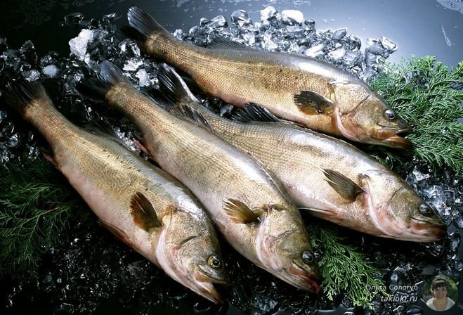
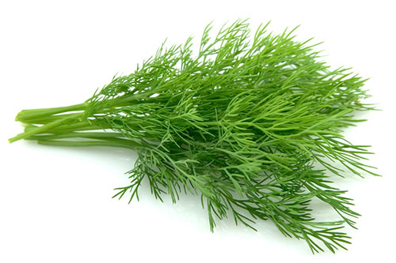
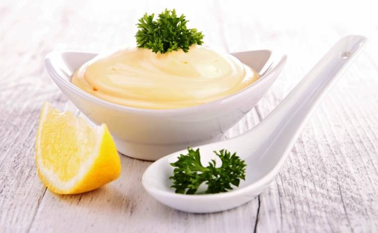

Информация о блюде
| Описание | Очень вкусный салат, делается из самой простой и дешевой рыбы, а по вкусу, действительно, очень похож на раковые шейки. |
| Каллории | 250 кКал |

1 кг

1 пучок

2-4 ст.л.
Способ приготовления
- Делать этот салат нужно за сутки до подачи, чтобы хорошо пропитался.
- Морковь варим, охлаждаем, натираем на самой мелкой терке.
- Отвариваем рыбу в подсоленной воде (в идеале - с добавлением сухих семян укропа, завернутых в марлю), остужаем, отделяем филе.
- Измельчаем рыбу вилкой, попутно удаляя оставшиеся косточки.
- Укроп режем также как можно мельче.
- Заправляем майонезом – и на сутки в холодильник.
- Вкус изумительный при минимуме затрат. Приятного аппетита!